|
Roda JC - Willem II (4-0) 28 januari 2005 |
Roda JC
- Willem II (4-0) 28 januari 2005
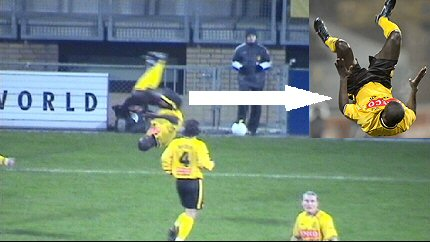
Kah heeft in de 7e min. 1-0 gescoord en viert dat met een buiteling.
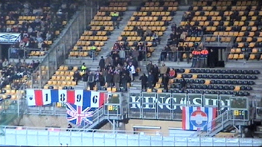
Tilburg bracht amper 50 man mee.
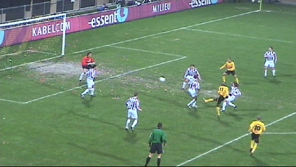
Een van de talrijke kansen voor Roda. Doelman Moens had echter
een
top-dag en werkte zodoende niet mee aan een doelpuntenfestijn.
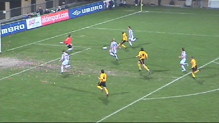
Een van de vele Moens-reddingen.
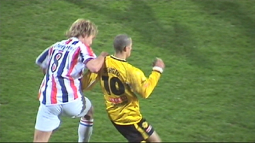
PSV-huurling Arvid Smit belaagt Sergio.
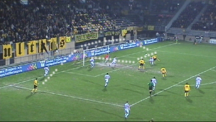
Filipovic verzendt de bal hoog in de 16. Cristiano kan de bal
naar Vicelich
koppen. Deze controleert de bal met zijn bovenbeen en schiet vervolgens
door de benen van een verdediger en buiten bereik van Moens, 2-0 binnen, (41').
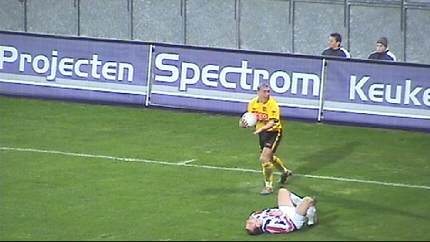
De spelers van Willem II gingen er veelal bij liggen. Bodnar
snapt niet
waarom hij wordt teruggefloten door scheidsrechter Braamhaar.
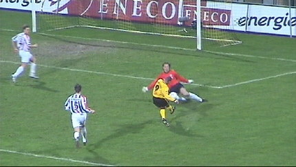
De tweede helft biedt wederom een kansenfestijn voor Roda, maar
ook nu
weer is Moens nauwelijks te passeren.
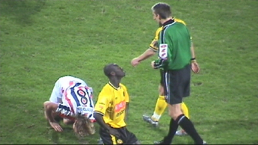
Het aantal gewonde Willem II-spelers is niet meer bij te houden.
In dit
geval gaat Kah een gele kaart krijgen.
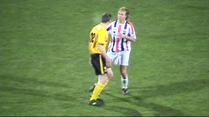
Ook de irritaties lopen op.
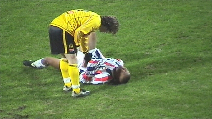
Van Dijk ontfermt zich over Bobson die over zijn eigen benen
struikelde.
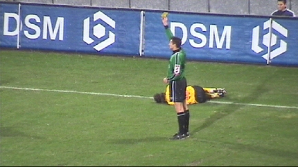
Vicelich ligt bruut onderuitgeschopt terwijl de sneeuw zachtjes
neerdaalt
op het PLS.
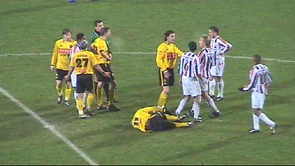
Hier heeft Kone het moeten ontgelden.
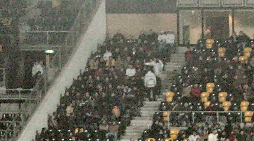
Op noord steekt iemand een flikkerster af. Vier stewards gaan er
op af om
de persoon te arresteren.........
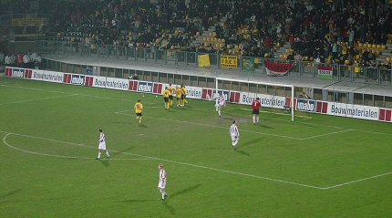
In de 87e min. scoort Kone 3-0.
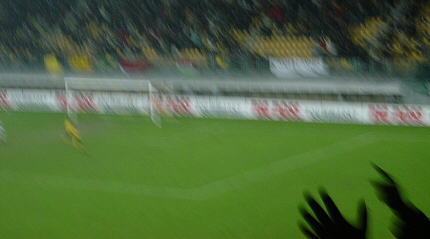
Deze opname zou je als een vorm van prettig impressionisme kunnen
betitelen. Cristiano heeft in de laatste minuut 4-0 gescoord nadat hij gretig
op de bal doorjoeg die Van der Haar aan hem verkwanselde.
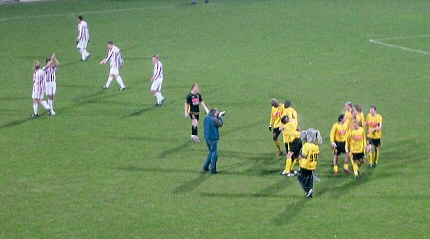
Terwijl de Tilburgers beschaamd afdruipen komen de geelzwarten
hun
supporters bedanken.
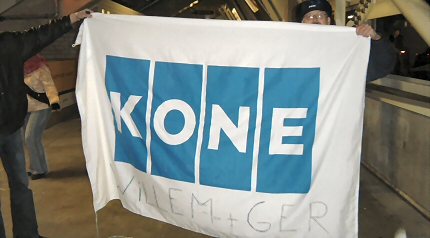
Willem en Ger hangen de Kone-supporters uit.
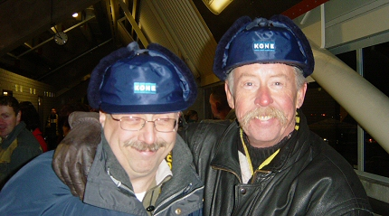
Maar de kenners doorzien deze lift-boys:
www.kone.com :-)))
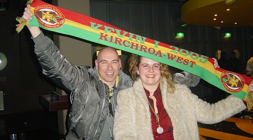
Het was nog heel lang gezellig in de Kick Off.
Op weg naar Kerkrade-West geven we twee ladderzatte westsiders
een lift.
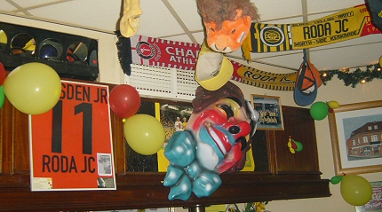
In cafe Rock-Inn waan je je in een Roda-museum.
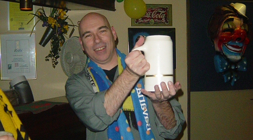
Iedereen die hier voor het eerst komt krijgt een gratis pul bier.
Ze vertellen er
alleen niet bij dat dat ding van beton is gemaakt !!!
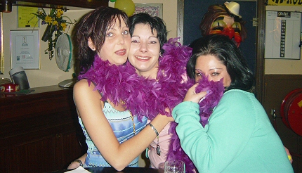
Opeens verschenen er drie Rodameedsjes die al in een
vergevorderde
carnavalsstemming verkeerden.
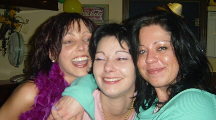
Eerst 3 punten, dan 3 lieverds. Soms zit het allemaal mee
!!!

Deze Ajax-supporter werd vakkundig verbouwd tot een Rodawaardige
tuup.
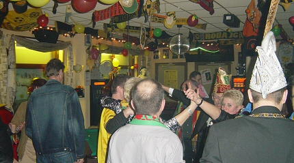
Na lang wachten komt prins Kevin I binnen met zijn gevolg. Het
feest gaat
dan nog een heel tijdje door.
Roda JC klimt naar een
voorlopig 7e plaats en is daarmee nog serieus in
de race voor een Europees ticket.